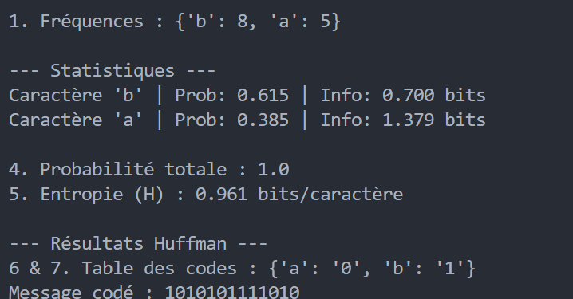
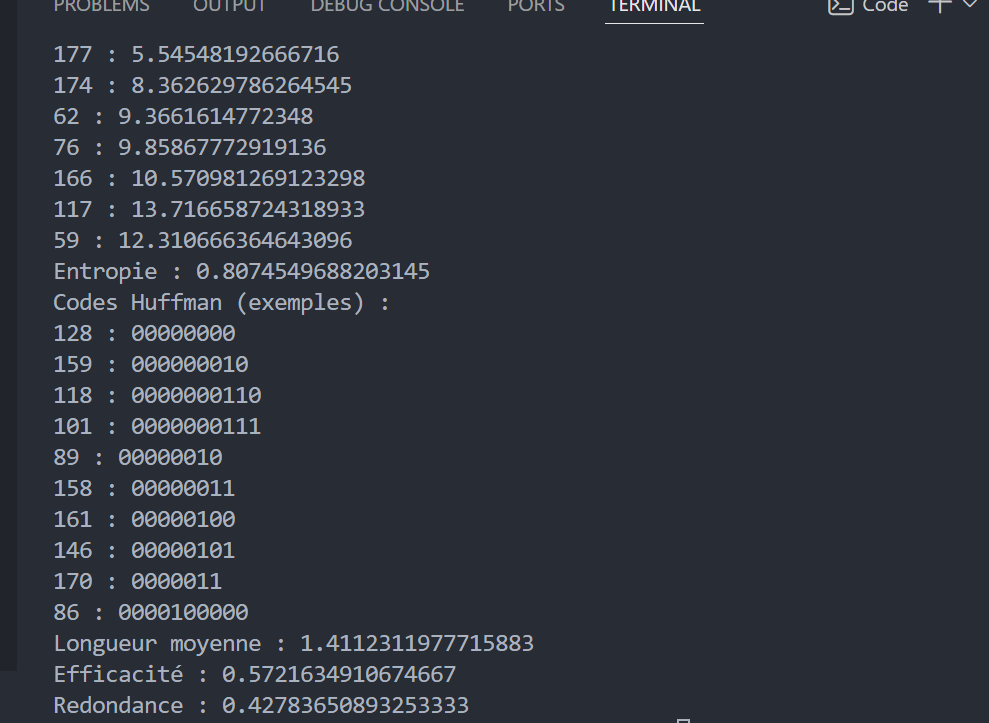
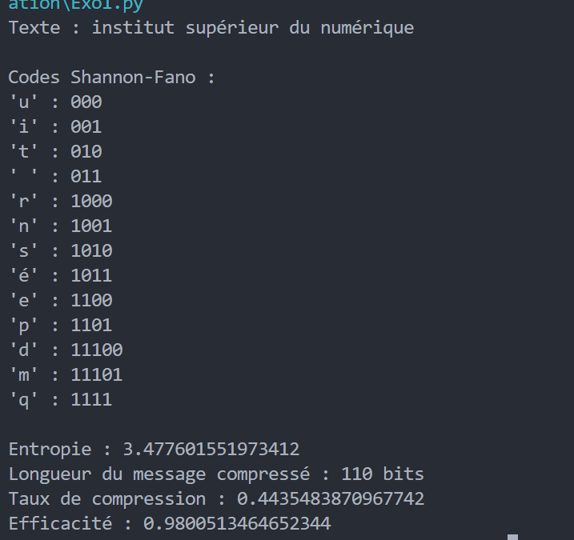
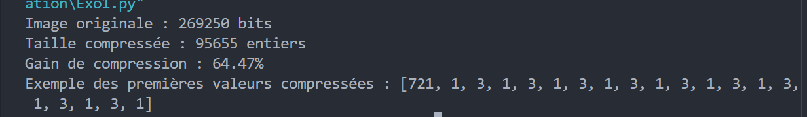
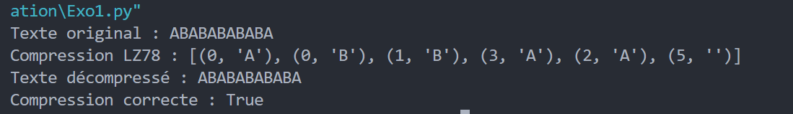

import
heapq, math
from
collections
import
Counter
def
huffman_complet():
message =
input("Saisissez votre texte : ")
with
open("msg.txt","w",encoding="utf-8")
as f:
f.write(message)
n =
len(message)
freqs = Counter(message)
print("1. Fréquences :", dict(freqs))
prob_totale = 0
entropie = 0
probs = {}
for char, f
in freqs.items():
p = f / n
probs[char] = p
prob_totale += p
info = -math.log2(p)
entropie += p * info
print(
"Caractère", char,
"| Prob:", p,
"| Info:", info, "bits")
print("Probabilité totale :", prob_totale)
print("Entropie :", entropie)
tas = [[f, [char, ""]] for char, f
in freqs.items()]
heapq.heapify(tas)
while
len(tas) > 1:
bas = heapq.heappop(tas)
haut = heapq.heappop(tas)
for paire
in bas[1:]:
paire[1] = "0" + paire[1]
for paire
in haut[1:]:
paire[1] = "1" + paire[1]
heapq.heappush(tas,
[bas[0] + haut[0]] + bas[1:] + haut[1:])
codes =
dict(heapq.heappop(tas)[1:])
msg_code = "".join(codes[c]
for c
in message)
print("Codes Huffman :", codes)
print("Message codé :", msg_code)
huffman_complet()

import
heapq, math
from
collections
import
Counter
def
huffman_complet():
message =
input("Saisissez votre texte : ")
with
open("msg.txt","w",encoding="utf-8")
as f:
f.write(message)
n =
len(message)
freqs = Counter(message)
print("1. Fréquences :", dict(freqs))
prob_totale = 0
entropie = 0
probs = {}
for char, f
in freqs.items():
p = f / n
probs[char] = p
prob_totale += p
info = -math.log2(p)
entropie += p * info
print(
"Caractère", char,
"| Prob:", p,
"| Info:", info, "bits")
print("Probabilité totale :", prob_totale)
print("Entropie :", entropie)
tas = [[f, [char, ""]] for char, f
in freqs.items()]
heapq.heapify(tas)
while
len(tas) > 1:
bas = heapq.heappop(tas)
haut = heapq.heappop(tas)
for paire
in bas[1:]:
paire[1] = "0" + paire[1]
for paire
in haut[1:]:
paire[1] = "1" + paire[1]
heapq.heappush(tas,
[bas[0] + haut[0]] + bas[1:] + haut[1:])
codes =
dict(heapq.heappop(tas)[1:])
msg_code = "".join(codes[c]
for c
in message)
print("Codes Huffman :", codes)
print("Message codé :", msg_code)
huffman_complet()

import
math
from
collections
import
Counter
texte = "institut supérieur du numérique"
N = len(texte)
freq = Counter(texte)
probs = {}
for c in freq:
probs[c] = freq[c] / N
H = 0
for p in probs.values():
H += p * math.log2(1/p)
symboles = sorted(probs.items(), key=lambda x: x[1], reverse=True)
codes = {}
def shannon_fano(liste, prefix=""):
if len(liste) == 1:
codes[liste[0][0]] = prefix
return
total = sum(p for _, p in liste)
somme = 0
for i in range(len(liste)):
somme += liste[i][1]
if somme >= total / 2:
break
shannon_fano(liste[:i+1], prefix + "0")
shannon_fano(liste[i+1:], prefix + "1")
shannon_fano(symboles)
message_code = ""
for c in texte:
message_code += codes[c]
L = 0
for c in probs:
L += probs[c] * len(codes[c])
longueur_originale = N * 8
longueur_compressee = len(message_code)
taux_compression = longueur_compressee / longueur_originale
efficacite = H / L
print("Texte :", texte)
print("\nCodes Shannon-Fano :")
for c in codes:
print(f"'{c}' : {codes[c]}")
print("\nEntropie :", H)
print("Longueur du message compressé :", longueur_compressee, "bits")
print("Taux de compression :", taux_compression)
print("Efficacité :", efficacite)

import
numpy
as
np
from
PIL
import
Image
img = Image.open("image.gif").convert("1")
image = np.array(img).flatten()
def compression_rle(image):
if len(image) == 0:
return []
rle = []
count = 1
prev = image[0]
for bit in image[1:]:
if bit == prev:
count += 1
else:
rle.append(count)
count = 1
prev = bit
rle.append(count)
return rle
def gain_compression(image, rle):
original_size = len(image)
compressed_size = len(rle)
gain = (1 - compressed_size / original_size) * 100
return gain
rle_image = compression_rle(image)
gain = gain_compression(image, rle_image)
print("Image originale :", len(image), "bits")
print("Taille compressée :", len(rle_image), "entiers")
print(f"Gain de compression : {gain:.2f}%")
print("Exemple des premières valeurs compressées :", rle_image[:20])

def lz78_compression(texte):
dico = {}
i = 1
w = ""
resultat = []
for c in texte:
wc = w + c
if wc in dico:
w = wc
else:
if w == "":
index = 0
else:
index = dico[w]
resultat.append((index, c))
dico[wc] = i
i += 1
w = ""
if w != "":
resultat.append((dico[w], ""))
return resultat
def lz78_decompression(code):
dico = {}
i = 1
texte = ""
for index, c in code:
if index == 0:
entry = c
else:
entry = dico[index] + c
texte += entry
dico[i] = entry
i += 1
return texte
texte = "ABABABABABA"
compressed = lz78_compression(texte)
decompressed = lz78_decompression(compressed)
print("Texte original :", texte)
print("Compression LZ78 :", compressed)
print("Texte décompressé :", decompressed)
print("Compression correcte :", texte == decompressed)
